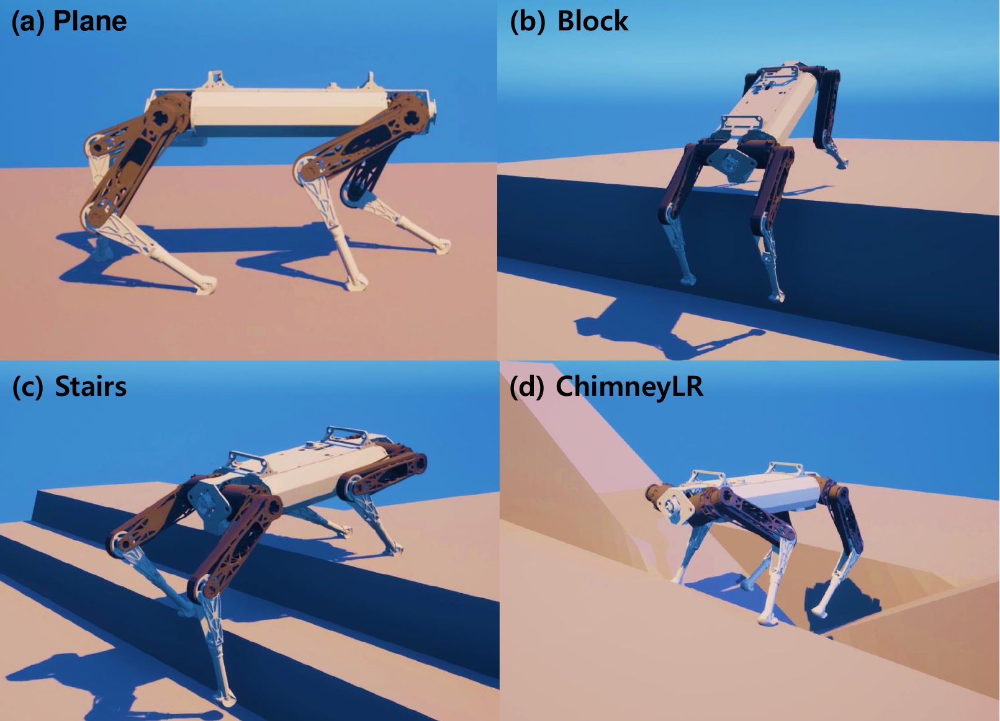
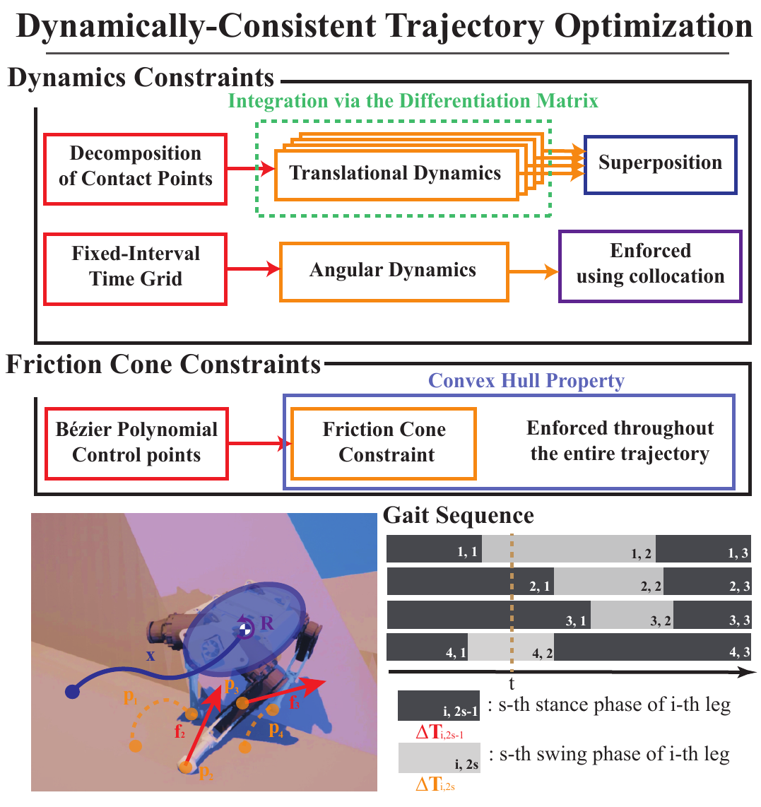
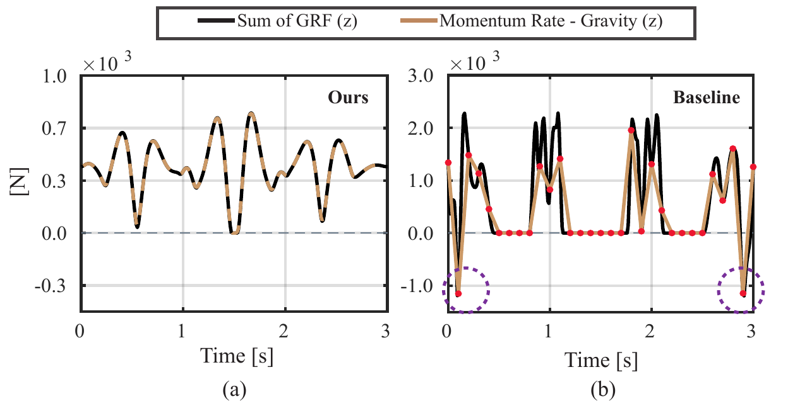
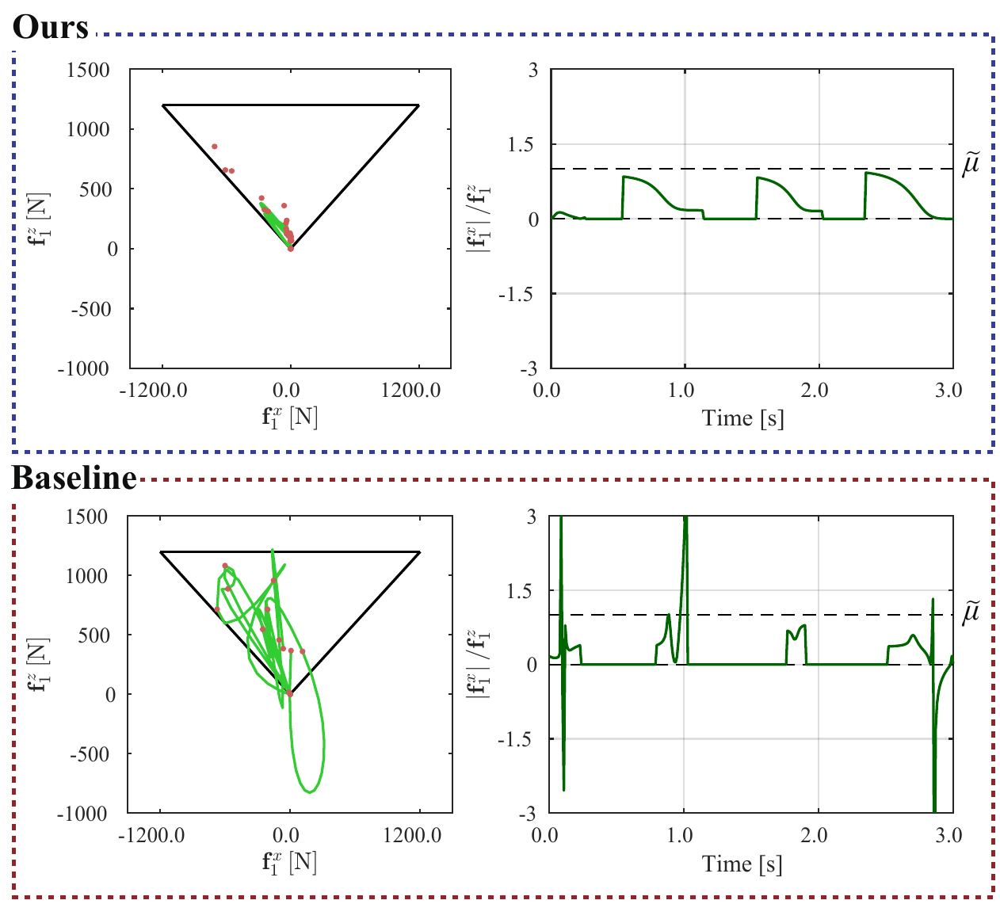

Contact point decomposition
Using the superposition property of linear translational dynamics, we separate the influence of each contact force into independent multiple-phase problems.
IEEE Robotics and Automation Letters · 2025
via Contact Point Decomposition
Humanoid Robot Research Center · KAIST

One optimization framework. Diverse contact sequences. Reliable motion across challenging terrain.
Phase-based trajectory optimization can discover versatile gait sequences over long horizons. Yet enforcing dynamics and contact constraints only at discrete nodes leaves the motion between those nodes unconstrained—exactly where short contact phases can fail.
We restructure the problem so that translational dynamics and friction-cone conditions hold continuously across the trajectory, producing reference motions that controllers can track more reliably.
We turn a coupled contact problem into a structured formulation whose geometry enforces the physics.

Using the superposition property of linear translational dynamics, we separate the influence of each contact force into independent multiple-phase problems.
Bézier differentiation matrices create an analytical relationship between robot position and contact force, satisfying translational dynamics throughout every phase.
Constraining force control points inside the friction pyramid keeps the complete Bézier force curve inside it—not just a sparse set of samples.
From the limitations of node-based constraints to contact point decomposition, continuous feasibility, and tracking validation.
Compared with a collocation baseline, our trajectories preserve physical feasibility throughout time and improve downstream tracking.
Analytical integration makes the gravity-compensated linear momentum derivative match the total ground-reaction force continuously. The baseline only matches at constrained nodes and misses behavior between them.

The convex-hull property of Bézier curves turns a finite set of control-point constraints into continuous-time friction feasibility. Interval-based enforcement can leave the cone between samples.

An MPC tracked trajectories from both methods over 50 randomized simulations. Our references reduced mean errors in every position and orientation axis.
The final volume, issue, page range, DOI, and public paper URL can be added once available.
@article{kim2025dynamically,
title = {Dynamically-Consistent Trajectory Optimization
for Legged Robots via Contact Point Decomposition},
author = {Kim, Sangmin and Kim, Hajun and Kim, Gijeong and
Kim, Min-Gyu and Park, Hae-Won},
journal = {IEEE Robotics and Automation Letters},
year = {2025}
}